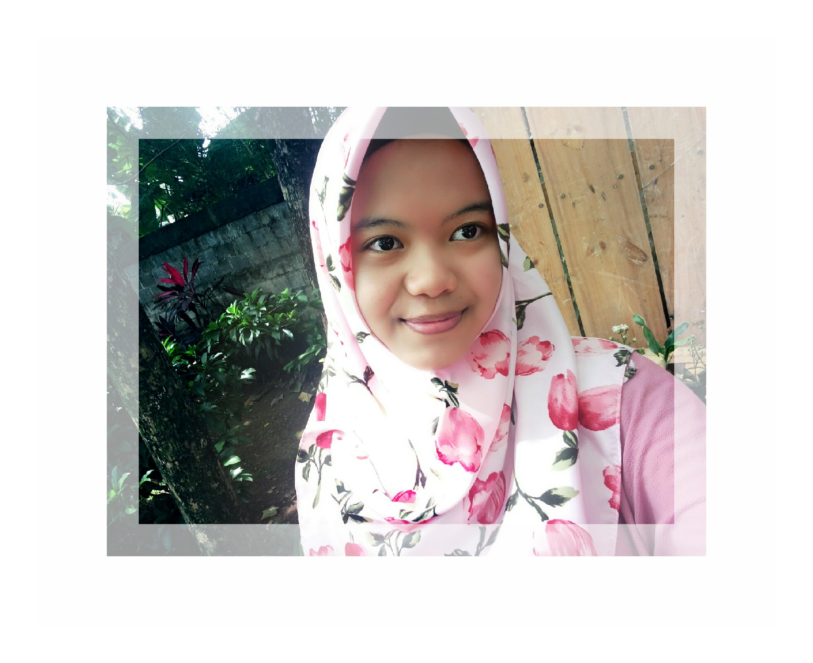
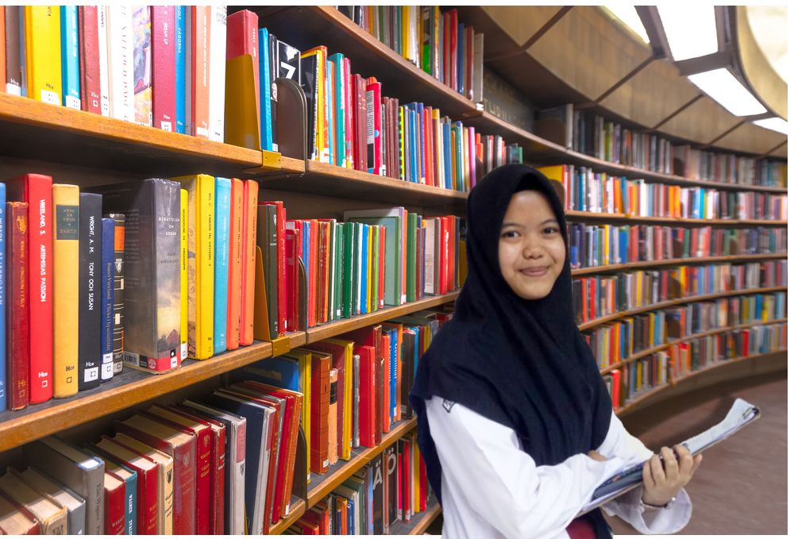
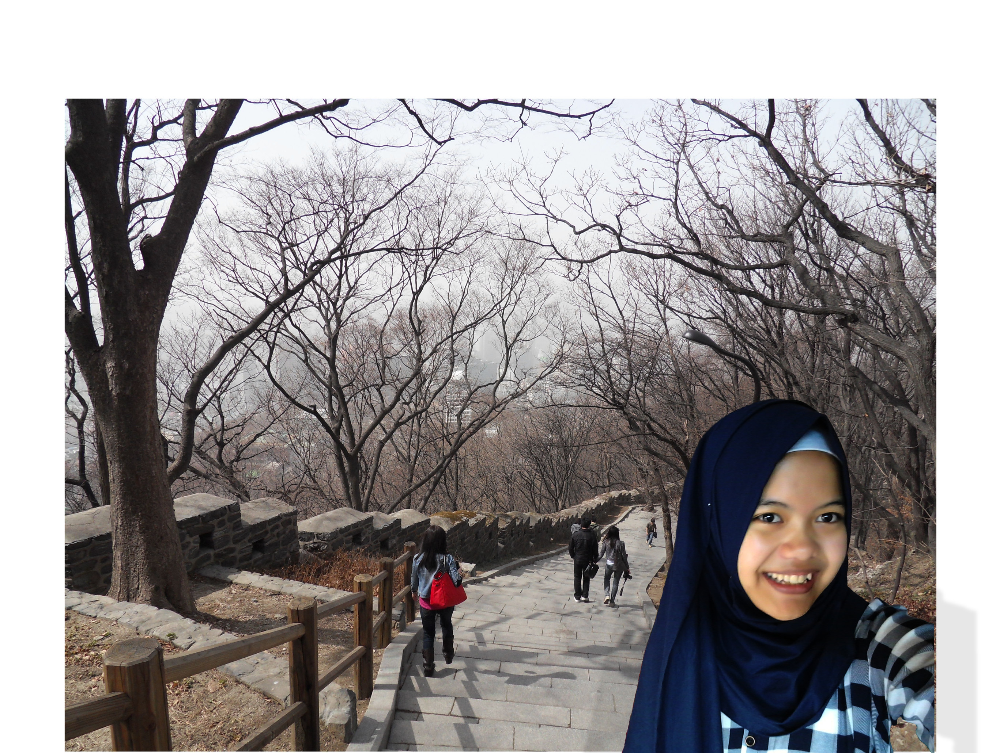

About Me
My Profile
Haiii.. Nama saya Dina Zahra Maulidina, biasa dipanggil Dina. Tapi sejak sekolah di SMAKBO beberapa orang panggil saya Dinsun. *oke abaikan* Saya lahir di Bogor, 14 Juni 2001 dan sekarang masih berumur 16 tahun, insha Allah Juni nanti 17 tahun. Aamiin. Saya anak pertama dari empat bersaudara, adik saya ada yang kelas 9 SMP, kelas 3 SD, dan yang bungsu baru 3 tahun. Kalo lagi liburan, di rumah rameee bangett..
Education Baground
Kini saya bersekolah di SMK-SMAK Bogor atau yang lebih dikenal dengan nama SMAKBO yang terletak di jalan Binamarga I, Ciheuleut, Baranangsiang, Bogor. Walaupun ini SMK, tapi sekolah ini berbeda dengan SMK lainnya yang mempunyai berbagai jurusan. Di sini hanya ada satu jurusan yaitu Analisis Kimia
.
My Hobbies
 Saya memiliki berbagai jenis hobi, diantaranya membaca, memasak, dan travelling. Saya sangat suka membaca semua bacaan yang menarik, baik itu novel, cerita rakyat, dan lainnya. Judul novel atau buku bacaan yang pernah saya baca diantaranya Rindu, In A Blue Moon, Tentang Kamu, Bulan Terbelah di Langit Amerika, dan masih banyak lagi. Selain dari novel, saya biasa membaca cerita melalui aplikasi Wattpad disana ada banyak cerita dari berbagai jenis genre. Ohiya, buat kalian yang penasaran sama salah satu novel yang pernah saya baca, ini saya kasih salah satu review-nya.
Tentang Kamu

Kisah ini bermula dari Zaman Zulkarnaen, seorang mahasiswa Universitas Oxford yang menjadi junior associate pada sebuah firma hukum ternama di pusat Kota London. Setelah dua tahun bekerja di sana, ia sama sekali tak menyangka akan mendapatkan kasus penyelesaian pembagian warisan yang besarnya dapat menyaingi kekayaan Ratu Inggris. Bila dapat menyelesaikan kasus ini, partner firmanya menjanjikan kursi lawyer untuk Zaman. Kejutan pertama, dengan kekayaan yang mencapai satu miliar pounsterling atau setara dengan 19 triliun rupiah, sang almarhum yang merupakan warga negara Inggris menghabiskan sisa hidupnya dengan tinggal di panti jompo Kota Paris. Kejutan kedua, sang almarhum bernama Sri Ningsih, adalah seorang perempuan Jawa tulen dari Indonesia, sama dengan Zaman. Namun, dengan data yang minim mengenai kehidupan Sri Ningsih, Zaman tak memiliki pilihan selain menelusuri jejak wanita itu dari awal kehidupannya. Mulai dari diary Sri Ningsih yang diserahkan petugas panti jompo. Sangat sulit bagi Zaman untuk mencari orang yang masih hidup dan mengingat kejadian yang berlangsung pada 1940-an, tahun kelahiran Sri Ningsih. Zaman mencari informasi dari satu informan ke informan lainnya, dari satu kota ke kota lainnya, Zaman menelusuri kehidupan Sri Ningsih. Sumbawa, Surakarta, Jakarta, London, Paris, dan seluruh dunia tempat Sri Ningsih menghabiskan waktu-waktu terakhirnya. Dengan informasi mengenai ahli waris yang muncul untuk kemudian menghilang lagi, Zaman mempelajari banyak hal tentang klien yang hartanya warisannya luar biasa besar ini. Hingga akhir hayatnya, Sri tetap dihantui masa lalu menyakitkan yang terus mencoba menorehkan luka di hatinya. Saat Sri Ningsih meninggal, bisa dikatakan bahwa wanita ini telah memenangkan pertarungan, tapi ternyata masih ada hal yang terus menghantui. Atas nama seluruh luka yang dimiliki kliennya, Zaman menghadapi masa lalu Sri Ningsih, meski harus berhadapan dengan pilihan hidup atau mati.